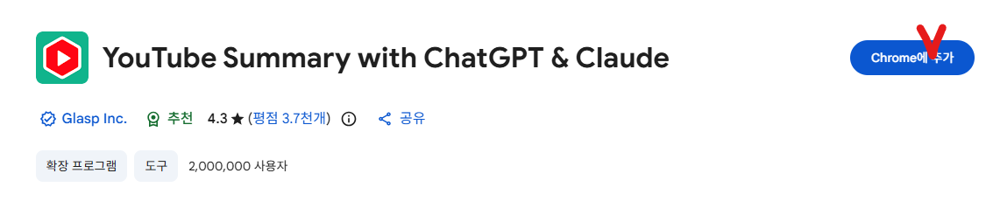
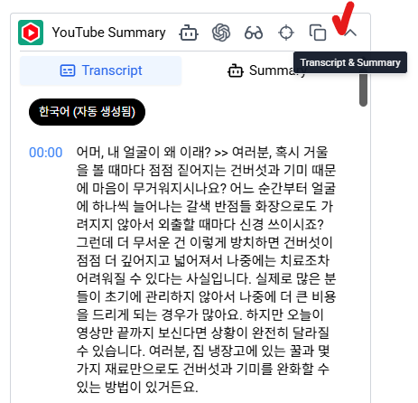
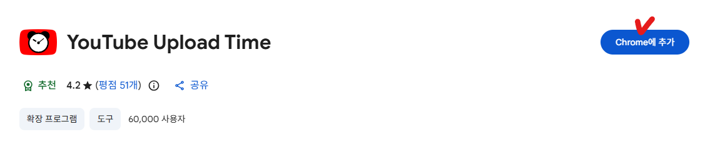
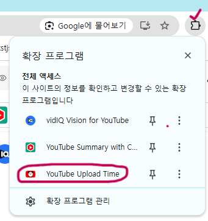

벤치마킹이란?
벤치마킹이란 이미 잘 되고 있는 채널과 영상을 분석해서 내 채널에 적용하는 것입니다. 유튜브에서 벤치마킹을 잘하는 것이 곧 유튜브를 잘하는 것이라고 해도 과언이 아닙니다.
특히 AI 유튜브는 처음부터 모든 것을 혼자 만들어낼 필요가 없습니다. 이미 조회수가 터지고 있는 채널을 철저하게 분석하고, 그 핵심을 내 채널에 적용하는 것이 가장 빠른 성장 방법입니다.
추가 확장 프로그램 설치하기
VidIQ는 이미 설치했죠? 벤치마킹을 더 효과적으로 하기 위해 두 가지 확장 프로그램을 추가로 설치해 놓겠습니다.
Youtube Summary
벤치마킹할 영상의 대본(스크립트)을 볼 수 있는 확장 프로그램입니다. 영상을 끝까지 보지 않아도 전체 대본을 텍스트로 확인할 수 있어 영상 구성과 흐름을 빠르게 파악할 수 있습니다. 벤치마킹할 때 꼭 필요한 확장 프로그램입니다.
Youtube Summary 설치하기 →
설치 후 유튜브 영상 아무거나 클릭해서 들어가보면 오른쪽에 Youtube Summary가 설치된 것을 확인할 수 있습니다. 아래로 펼쳐보기 버튼을 클릭하면 해당 영상의 대본을 텍스트로 볼 수 있고, 복사도 가능합니다.

Youtube Upload Time
벤치마킹할 영상이 정확히 몇 시에 업로드되었는지 확인할 수 있는 확장 프로그램입니다. 나중에 내 영상을 업로드할 때 최적의 시간을 정하는 데 활용할 것입니다. 필수는 아니지만, 벤치마킹할 채널의 영상이 몇 시에 올라가는지 궁금한 분들은 설치해두시기 바랍니다.
Youtube Upload Time 설치하기 →
설치 후 유튜브 영상에 들어가서 오른쪽 상단의 퍼즐 모양을 클릭한 뒤 Youtube Upload Time을 클릭하면 해당 영상이 몇 시에 업로드되었는지 확인할 수 있습니다.

벤치마킹 채널 찾는 방법
알고리즘 세팅에서 30~50개의 채널을 구독한 이유, 기억하시나요? 내 홈 화면에서 최근 떡상한 영상이 무엇인지, 어떤 주제와 키워드를 사용했는지 한눈에 파악하기 위해서였습니다.
이제 그 30~50개 채널 중에서 딱 하나의 채널을 골라 집중적으로 파고들 것입니다. 이 채널 하나만 제대로 벤치마킹한다는 마인드로 접근하는 것이 중요합니다.
채널 고르는 기준
- 구독자 3만 명 이하
- 첫 영상 업로드 1~3개월 이내인 채널
- 최근 올리는 영상마다 VidIQ 기준 x100 이상인 채널 (조회수 1만 이상이 터지는 채널)
채널 개설일이 오래됐어도 괜찮습니다.
간혹 채널을 만든 지 오래됐지만 영상 수가 별로 없는 채널들이 있습니다. 이런 채널은 채널을 구매했거나, 기존 영상을 모두 삭제하고 새로 운영하는 경우일 수 있습니다.
확인 방법은 해당 채널 홈 화면 → 동영상 → 날짜순을 클릭해서 첫 영상이 언제 올라왔는지 보면 됩니다. 영상을 올린 지 얼마 안 됐다면 이 채널도 기준에 해당됩니다.
채널을 골랐으면 이렇게 파고드세요
이 채널을 완전히 분해한다는 마인드로 철저하게 분석합니다.
- 영상을 끝까지 시청해보기
- 초반 30초~1분, 시청자를 사로잡는 후킹 멘트 파악하기
- 영상 길이 확인하기
- 이미지로만 만든 영상인지, 동영상으로 만든 영상인지 확인하기
- 썸네일 패턴 확인하기
- 제목 구조 확인하기
- 해시태그, 태그 확인하기
벤치마킹과 복사의 차이
벤치마킹이라고 해서 그 채널과 영상을 그대로 베끼는 것이 아닙니다. 영상 대본이나 제목을 그대로 복사했다가는 저작권 침해로 채널이 신고당하거나 삭제될 위험이 있습니다.
우리가 벤치마킹하는 것은 다음과 같습니다.
- 핵심 키워드
- 글의 구성 (뼈대)
- 흐름과 전개 방식
- 표현 기법
- 스토리 전개
이러한 요소들을 참고해서 저작권 침해 위험이 전혀 없는 나만의 글을 만드는 것입니다. 이 부분은 영상 제작 과정에서 더 자세히 다룰 예정입니다.